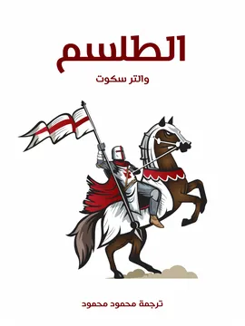

الطلسم

قراءة عربية أصلية محددة النطاق في الصفحات 9 إلى 14 من ملف PDF المرتبط، وليست تلخيصا كاملا للكتاب. نناقش ما تدعمه هذه المقاطع فقط.
الطلسم: لماذا اختار سكوت الحروب الصليبية؟
يستهل والتر سكوت مقدمته بأن قصة «المخطوبة» لم ترق لصديق أو صديقين ظنا أنها لا تتلاءم مع ما أخرج من «قصص الصليبيين». ويعترف بمشقة رسم صورة حية لعالم يجهله، ليس له عنه إلا ذكريات باكرة لألف ليلة وليلة، لكنه لا يعاني قصور الجهل وحده: فقد تغلغل حب الأسفار بين الطبقات، وتطلعت عيون البريطانيين إلى بلاد اليونان وجهادها في سبيل الحرية، وإلى فلسطين التي لها ذكريات أكثر قداسة. ويقول إن مؤلف «أناستاسيوس» وكاتب «الحاج بابا» وصفا عادات الأمم الشرقية وصفًا صادقًا تمازجه فكاهة، وإن صاحب «ثعلبا» بلغ بالاستقراء وحده شأوًا بعيدًا في معرفة عقائد الشرق وتاريخه، وسار «مور» و«بايرون» على الدرب عينه، حتى أمسى يستحي من المحاولة. لكنه قهر العقبات واستقر رأيه على الفترة المتصلة بالحروب الصليبية التي التقى فيها صلاح الدين برتشارد الأول؛ فأظهر الملك الإنجليزي قسوة وعنفًا، بينما أبان صلاح الدين عن الحكمة والسياسة البعيدة، وتباريا أيهما يفضل الآخر في الفروسية والشجاعة والكرم. ويذكر ما أدخله على الرواية من شخصيات ثانوية كالأمير داود الاسكتلندي، وحديث التمائم والرقى.
زاوية وحدود القراءة
قراءة موجزة من ص ٩ إلى ص ١٤ من أصل ٣٥٦ صفحة، تعرض مقدمة المؤلف، لا الكتاب كاملًا.
الطبعة والقراءة
هذه النسخة من الكتاب صادرة ومتاحة مجانًا بموجب اتفاق قانوني بين مؤسسة هنداوي وأسرة السيد الأستاذ محمود محمود.
تنزيل PDF المجاني ↓ القراءة والمصدر الرسمي ↗